Kapitel 1Überblick & Grundprinzip
Der Smart Student Picker ist ein digitales Werkzeug für die Lehrveranstaltung: Studierende melden sich per QR-Code auf ihrem Handy an, und auf dem Beamer läuft eine Live-Bühne („Bewerbungsflug"), auf der die Dozierenden entweder
- eine Person auslosen (z. B. um eine Aufgabe zu vergeben), oder
- Teams (und optional Themen) bilden
können – live vor der Gruppe, beamer-tauglich und auch am Handy bedienbar.
Das Grundprinzip: so wenig Daten wie möglich
Die App ist bewusst datensparsam gebaut: Die Namen der Studierenden werden zu keinem Zeitpunkt dauerhaft gespeichert. Sie tauchen nur kurz auf, solange eine Sitzung läuft, und sind danach wieder weg (mehr dazu im nächsten Kapitel). Wer die Ergebnisse über das Semester hinweg behalten möchte, exportiert sie bewusst selbst als Datei (CSV/Excel) – das entscheidet also die Dozentin oder der Dozent, nicht die App automatisch.
| Sz1 – Einzelauslosung | Sz2 – Team-Auslosung | |
|---|---|---|
| Zweck | Eine Person fair auswählen (z. B. für eine Aufgabe/Vortrag) | Teilnehmende in Teams (+ Themen) einteilen |
| Besonderheit | „Fair", nicht rein zufällig – wer sich meldet und nicht drankommt, hat beim nächsten Mal bessere Chancen | Teams/Mitglieder lassen sich sperren bzw. fixieren, nur der Rest wird neu verlost |
Kapitel 2Wie die App im Hintergrund funktioniert
Dieses Kapitel richtet sich an alle, die verstehen möchten, was technisch passiert, wenn ein Name auf dem Beamer erscheint – ganz ohne Vorwissen. Die Fachbegriffe aus dem Code werden hier bewusst in Alltagssprache übersetzt.
Was die Kästen im Diagramm im Alltag bedeuten:
- Server-Programm (technisch: „Next.js")
- Die komplette Anwendung – die Seiten, die man im Browser sieht, und das Programm, das im Hintergrund Anfragen beantwortet – läuft als ein einziges Programm auf dem Server. Es gibt also kein separates „Backend-System", das getrennt gewartet werden müsste.
- Kurzzeitiger Merkzettel (technisch: „In-Memory Relay")
- Man kann sich das wie ein Whiteboard im Arbeitsspeicher des Servers vorstellen: Sobald sich jemand anmeldet, wird der Name kurz dort notiert, damit er sofort auf dem Beamer erscheinen kann. Dieses Whiteboard ist aber flüchtig – es wird nirgends auf die Festplatte geschrieben. Läuft der Server neu an oder wird die Sitzung beendet, ist der Eintrag weg. Genau das ist der Kern des Datensparsamkeits-Prinzips: Namen existieren nur, solange sie gebraucht werden.
- Live-Übertragung wie ein Ticker (technisch: „SSE – Server-Sent Events")
- Der Beamer-Bildschirm hält eine dauerhaft offene, einseitige Standleitung zum Server-Programm – ähnlich einem Live-Ticker im Sportformat. Sobald sich jemand neu anmeldet, schickt der Server diese Information sofort durch die offene Leitung. Die Beamer-Seite muss dafür nicht neu geladen werden und fragt auch nicht ständig nach – sie bekommt automatisch Bescheid.
- Datenbank (MariaDB)
- Hier wird ausschließlich gespeichert, welche Sitzungen es gibt – Name der Sitzung, Typ (Einzel- oder Team-Auslosung), Einstellungen, Status (aktiv/inaktiv/beendet). Teilnehmernamen stehen hier nie drin.
- Anmelde-Ausweis für Dozierende (technisch: „httpOnly-Cookie")
- Nach der Eingabe des Dozenten-Passworts merkt sich der Browser automatisch einen unsichtbaren „Ausweis", der 12 Stunden lang gültig ist. Dadurch muss man das Passwort nicht bei jedem Klick erneut eingeben. Die Anmelde- und Live-Seiten für Studierende brauchen dagegen kein Passwort – sie sind nur über den jeweiligen QR-Code/Link einer Sitzung erreichbar, tauchen also nirgends öffentlich auf.
Kapitel 3Erste Schritte: Anmelden
Der Dozierenden-Bereich ist mit einem gemeinsamen Passwort geschützt. Beim Aufruf der Startseite landet man automatisch auf der Login-Seite.
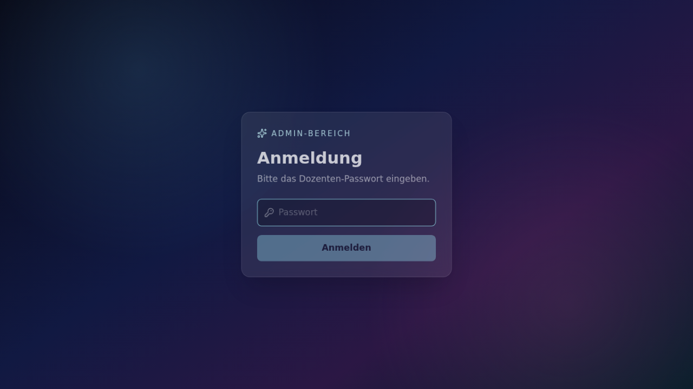
Nach erfolgreichem Login gelangt man auf das Dashboard mit der Übersicht aller Sitzungen.
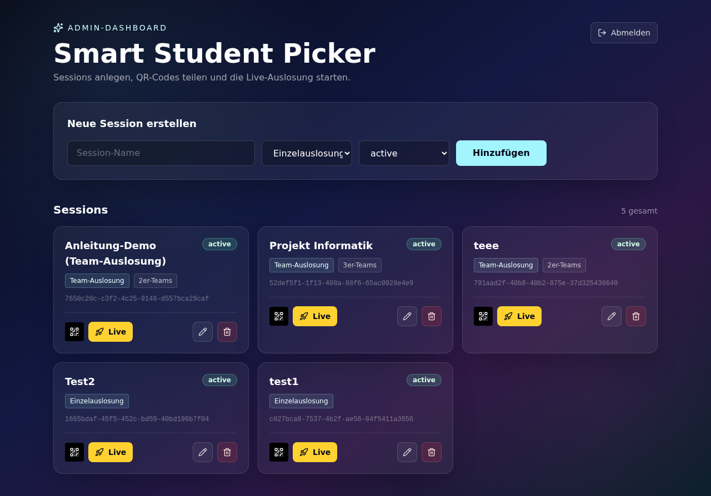
Kapitel 4Einzelauslosung (Sz1)
Ziel: aus allen angemeldeten Studierenden fair eine Person auswählen.
1. Sitzung anlegen
- Im Dashboard einen Namen für die Sitzung eingeben (z. B. „Vorlesung 5 – Aufgabe").
- Als Typ „Einzelauslosung" wählen.
- Status auf
activelassen, damit sich Studierende sofort anmelden können. - Auf „Hinzufügen" klicken.
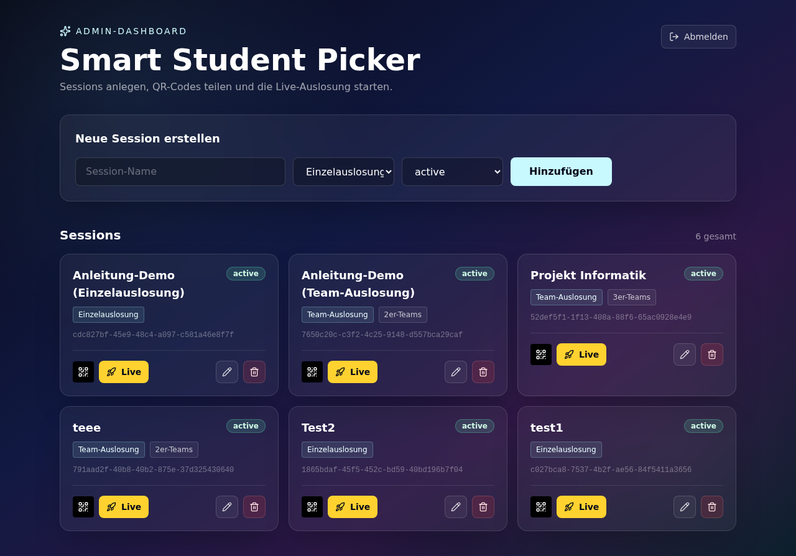
2. QR-Code zeigen
Über das QR-Icon auf der Session-Karte öffnet sich der QR-Code, den die Studierenden mit dem Smartphone scannen. Alternativ lässt sich der Link auch direkt kopieren und z. B. im Chat teilen.
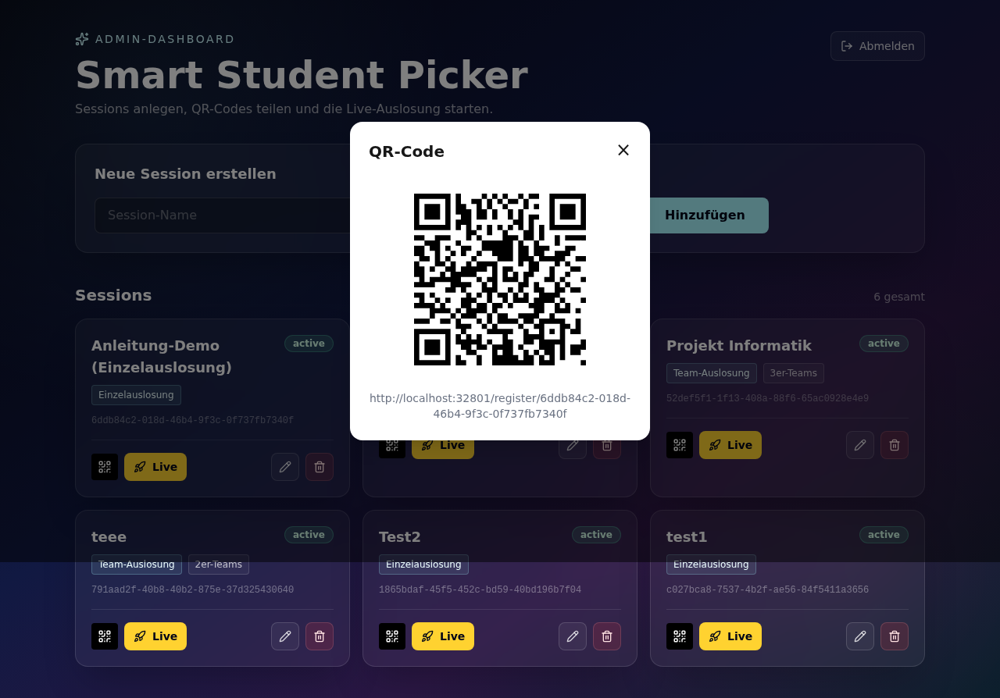
3. Live-Bühne öffnen
Über den „Live"-Button auf der Session-Karte gelangt man auf die Beamer-taugliche Live-Ansicht.
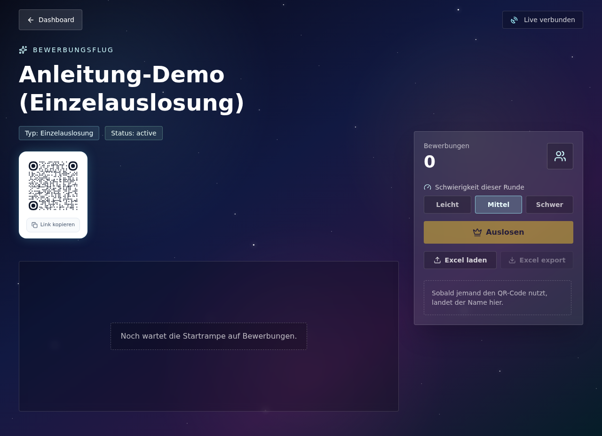
4. So melden sich Studierende an
Nach dem Scannen landen Studierende auf einer schlichten Seite, auf der nur der Name eingetragen wird.
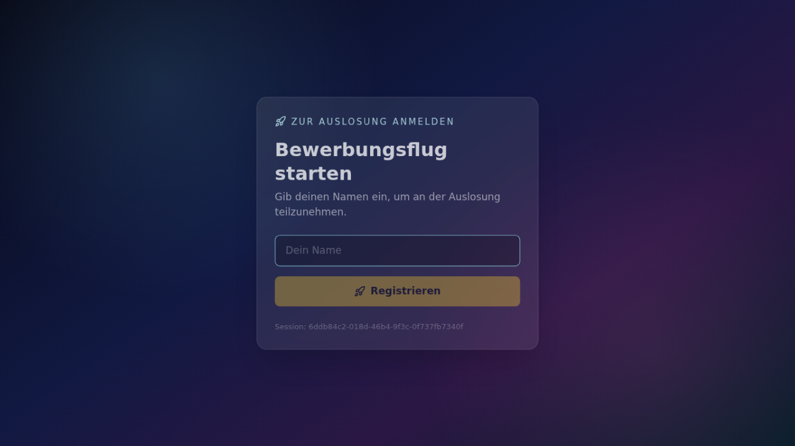
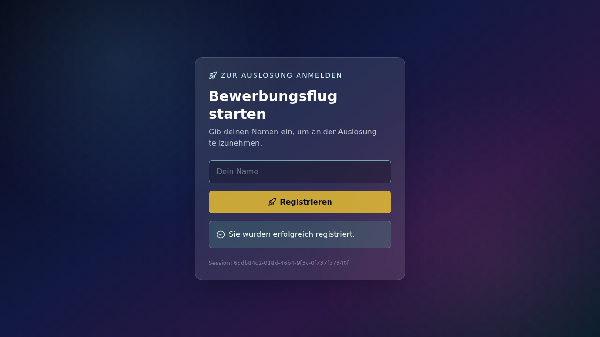
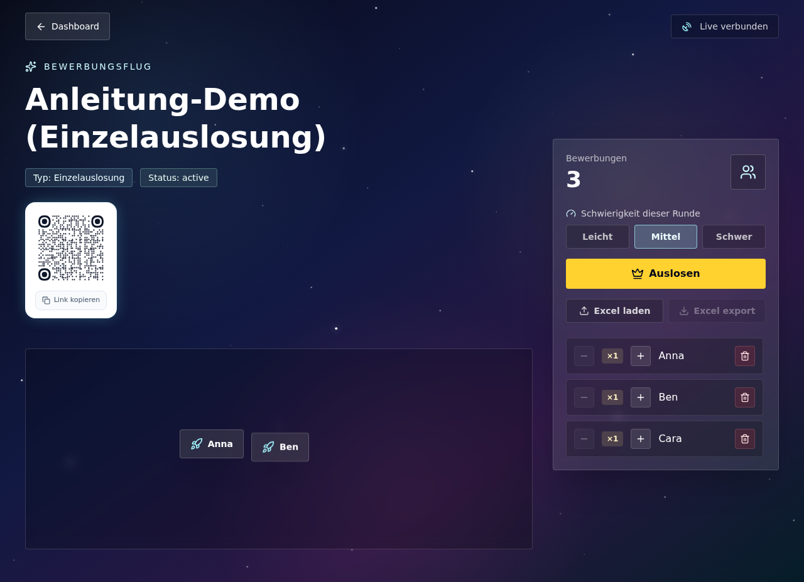
5. Auslosen
Ein Klick auf „Auslosen" startet die Ziehungs-Animation. Die Auswahl ist
dabei bewusst nicht rein zufällig, sondern gewichtet nach einem einfachen
Punktesystem ("Guthaben"), das unter jedem Namen als ×N angezeigt wird.
- So funktioniert die Gewichtung genau
-
-
Jede Person startet mit Gewicht 1 (Guthaben 0). Je höher das Guthaben,
desto höher die Chance gezogen zu werden — Gewicht =
1 + Guthaben. -
Wer sich meldet, aber bei der Ziehung nicht gewinnt, bekommt Guthaben
gutgeschrieben:
+1bei „Leicht",+2bei „Mittel",+3bei „Schwer" (einstellbar über „Schwierigkeit dieser Runde"). So steigen die Chancen für Übergangene von Runde zu Runde. - Wer gewinnt, wird beim Werten der Runde nicht aus dem Pool entfernt — das Guthaben wird lediglich halbiert. Damit sinkt die Chance direkt nach einem Gewinn spürbar, ohne dass die Person für den Rest des Semesters komplett ausgeschlossen bleibt. Das verhindert, dass irgendwann alle schon "dran waren" und gar niemand mehr auslosbar ist.
- Über die kleinen +/– Regler neben jedem Namen lässt sich das Gewicht zusätzlich manuell für die aktuelle Runde anpassen (z. B. um jemanden bewusst zu bevorzugen).
-
Jede Person startet mit Gewicht 1 (Guthaben 0). Je höher das Guthaben,
desto höher die Chance gezogen zu werden — Gewicht =
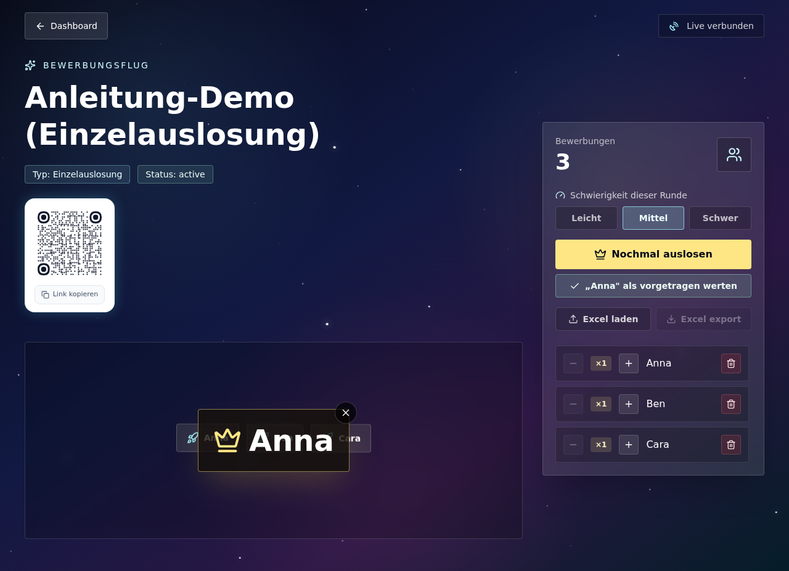
Über den Button „… als vorgetragen werten" wird die Runde abgeschlossen: Die übrigen Melder bekommen ihr Guthaben gutgeschrieben, die gewonnene Person behält ihr (halbiertes) Guthaben und bleibt für künftige Ziehungen weiterhin im Pool.
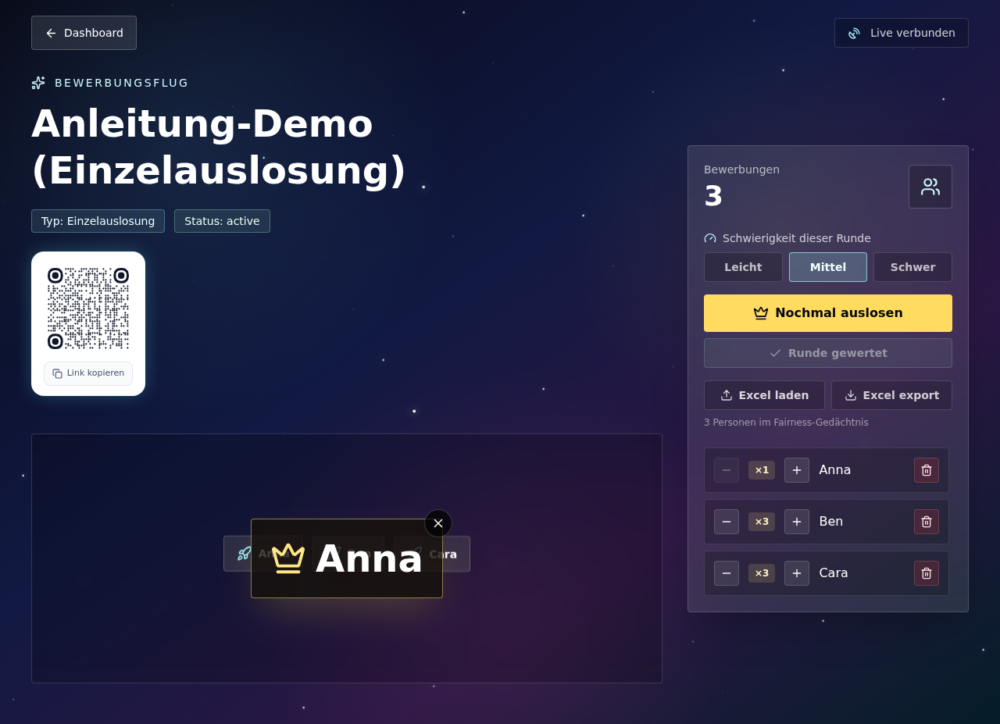
6. Ergebnisse sichern (Excel-Export)
Da Namen nicht dauerhaft gespeichert werden, liegt die Sicherung der Ergebnisse bewusst in
der Hand der Dozierenden: „Excel export" lädt eine .xlsx-Datei mit den Spalten
Name, Guthaben und Meldungen (Anzahl erfolgloser
Meldungen) herunter und setzt danach die lokale Sitzung zurück. Über „Excel laden" lässt sich
derselbe Stand später wieder einspielen, um über mehrere Vorlesungstermine hinweg fair zu
bleiben — sonst fängt die Gewichtung beim nächsten Termin wieder bei null an.
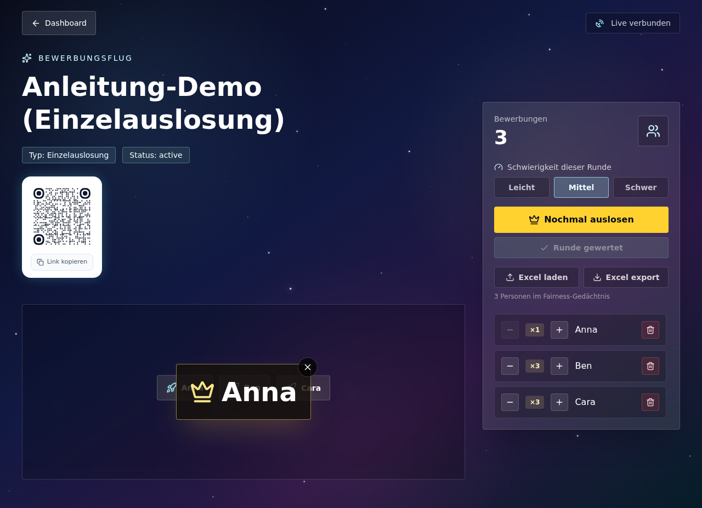
Kapitel 5Team-Auslosung (Sz2)
Ziel: Studierende in Teams (und optional zusätzlich Themen) einteilen.
1. Sitzung anlegen
Wie bei Sz1, nur dass als Typ „Team-Auslosung" gewählt wird. Dabei lässt sich zusätzlich die gewünschte Teamgröße festlegen.
2. Anmeldungen sammeln
QR-Code teilen wie bei Sz1; alle Anmeldungen laufen live in der Seitenleiste auf.
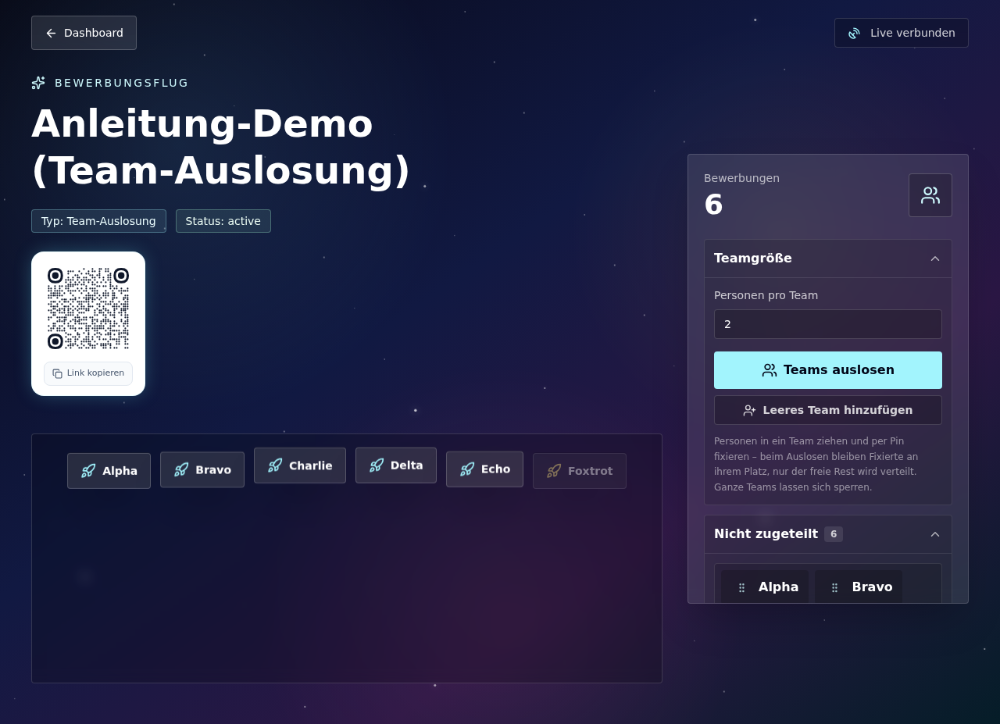
3. Optional: Themen anlegen
Über den aufklappbaren Bereich „Themen" lassen sich vor oder nach der Ziehung Themen hinzufügen, die anschließend per Drag & Drop einem Team zugeordnet werden können.
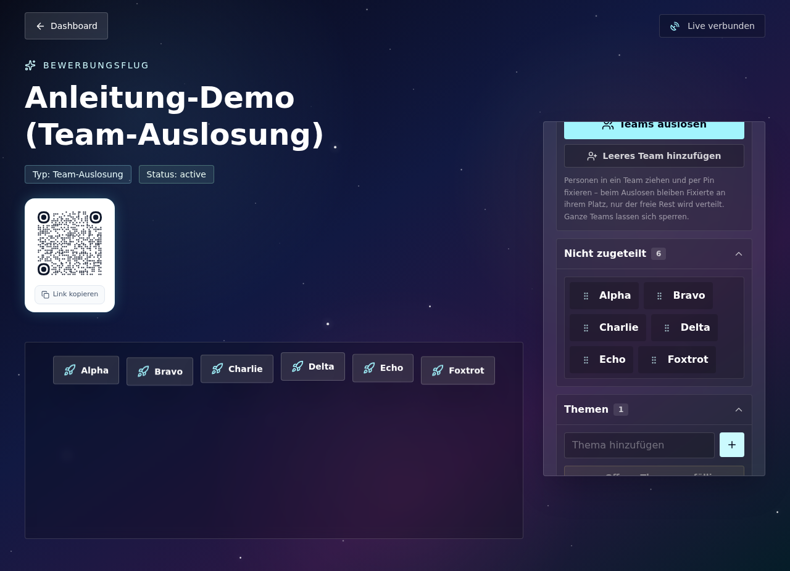
4. Teams auslosen
Ein Klick auf „Teams auslosen" verteilt alle Angemeldeten zufällig auf die Teams.
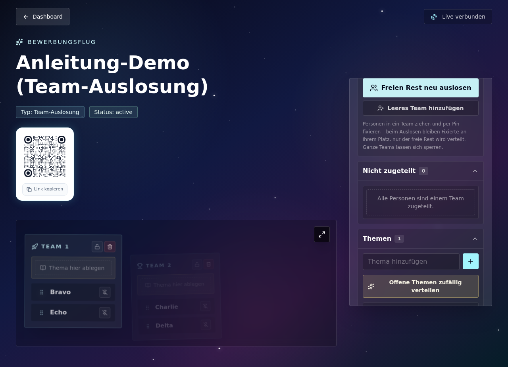
5. Anpassen: Ziehen, Fixieren, Sperren
Bevor das Ergebnis endgültig ist, lässt es sich frei anpassen:
- Per Drag & Drop Personen zwischen Teams verschieben.
- Mitglied fixieren (Pin-Symbol): Diese Person bleibt bei einer erneuten Ziehung garantiert in ihrem Team.
- Team sperren (Schloss-Symbol): Das ganze Team soll bei einer erneuten Ziehung unverändert bleiben.
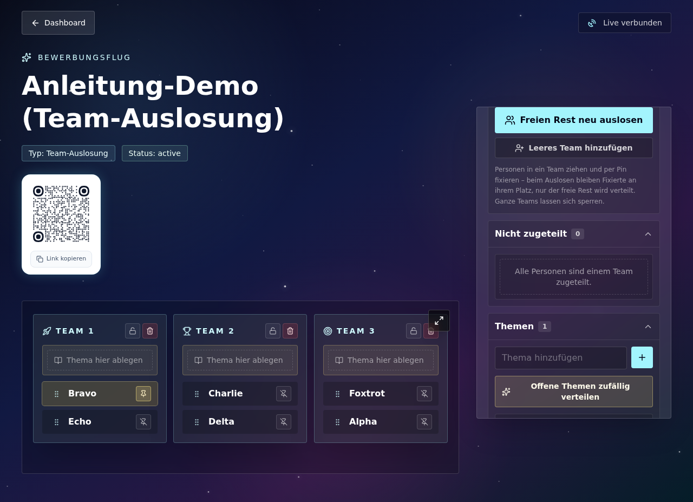
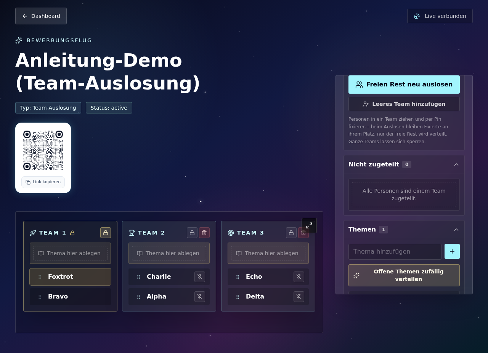
Über „Freien Rest neu auslosen" werden anschließend nur die noch freien, nicht fixierten bzw. nicht gesperrten Personen neu gemischt – gesperrte Teams und fixierte Mitglieder bleiben dabei unangetastet.
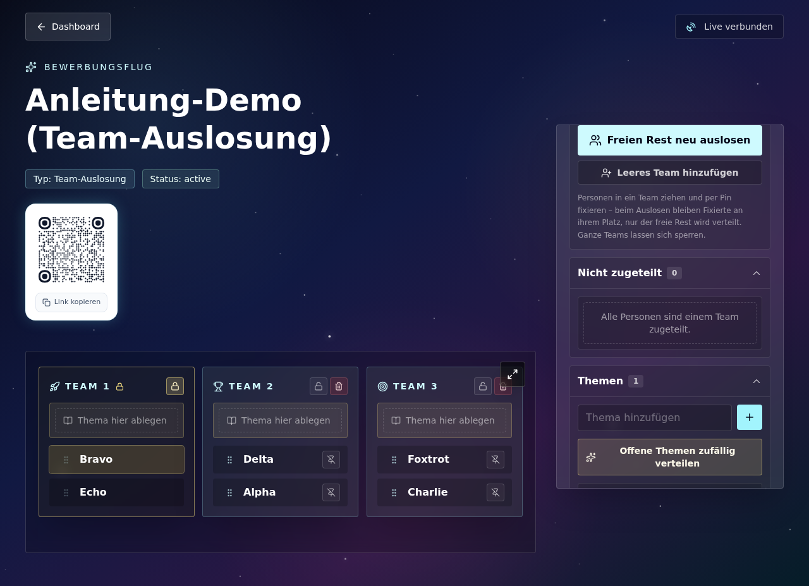
6. Vollbild für den Beamer
Über das Vollbild-Symbol lässt sich die Teamansicht formatfüllend auf dem Beamer anzeigen.
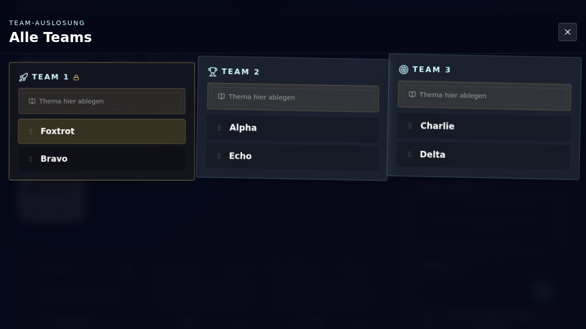
Kapitel 6Betrieb & Hosting (Kurzfassung)
Für Dozierende ist dieses Kapitel meist nicht relevant – es richtet sich an alle, die die Anwendung technisch betreuen.
- Die App läuft als ein einzelner Docker-Container hinter einem Plesk-Reverse-Proxy.
- Für die Live-Übertragung (Live-Ticker/SSE) müssen am Reverse-Proxy zwei Einstellungen gesetzt sein: gepuffertes Weiterleiten aus und ein langes Lese-Timeout, sonst bricht die Verbindung nach kurzer Zeit ab.
- Ein Update/Redeploy besteht aus einem einzigen Docker-Befehl, der das Image neu baut und den Container ersetzt.
Details (Datenbank-Schema, genaue Konfiguration) stehen in docs/DEPLOYMENT.md im Projekt-Repository.
Kapitel 7Häufige Fragen
Was bedeutet „Verbindung wird wiederhergestellt…" auf der Live-Seite?
Die dauerhaft offene Leitung zum Server (siehe Kapitel 2) ist kurz unterbrochen, z. B. durch einen kurzen Netzwerkaussetzer. Die Seite versucht automatisch, sich neu zu verbinden; ein Neuladen ist normalerweise nicht nötig.
Der QR-Code lässt sich nicht scannen – was tun?
Am zuverlässigsten funktioniert der direkte Link („Link kopieren"), z. B. per Chat oder Lernplattform geteilt, falls die Beamer-Auflösung oder Entfernung das Scannen erschwert.
Können sich Studierende mehrfach anmelden?
Ja, aktuell gibt es keine technische Sperre gegen Mehrfachanmeldungen mit unterschiedlichen oder gleichen Namen – das liegt in der Verantwortung der Gruppe vor Ort.
Gehen die Daten verloren, wenn ich die Seite neu lade?
Nein, die Ergebnisse einer laufenden Sitzung bleiben im Browser der Dozierenden erhalten (auch nach einem Neuladen). Dauerhaft weg sind sie erst nach einem bewussten Zurücksetzen (z. B. durch den Excel-Export bei Sz1) oder wenn die Sitzung gelöscht wird.
Welche Browser werden unterstützt?
Alle aktuellen Versionen von Chrome, Firefox, Edge und Safari – sowohl am Rechner als auch am Smartphone.